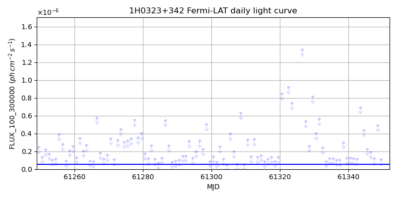
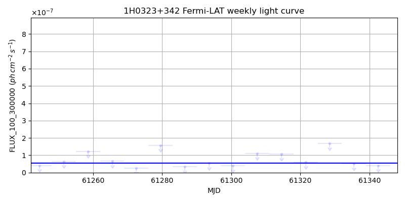
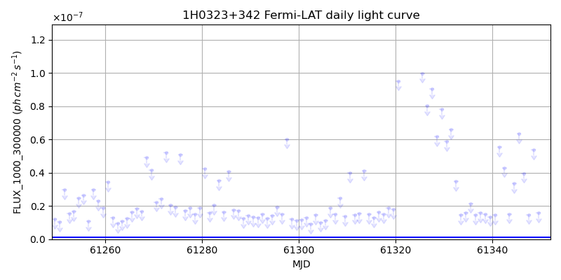
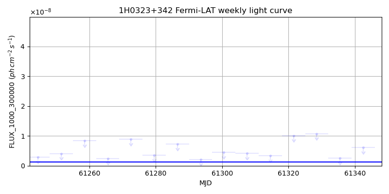

LAT Lightcurve site: https://fermi.gsfc.nasa.gov/ssc/data/access/lat/msl_lc/source/1H_0323p342
NED: Query
Time of last update of this page: UT: 2026-11-06 16:14 (MJD: 61350.676)
| Property | Value |
|---|---|
| R.A. | 3:24:41.28 |
| Dec. | 34:10:44.4 |
| z | 0.063 |
| 3FGL SpectrumType | LogParabola |
| 3FGL PL Index | |
| 3FGL Flux_100_300000 | 5.53e-08 1 / (s cm2) |
| 3FGL Flux_1000_300000 | 1.27e-09 1 / (s cm2) |
| 3FGL Flux >200 GeV | 2.50e-15 1 / (s cm2) |
| 3FGL Extrap. Crab >200 GeV | 0.00 |
| 3FGL Flux After EBL Absorption >200GeV | 2.23e-15 1 / (s cm2) |
| 3FGL EBL Crab Fraction >200GeV | 0.00 |

| MJD | dMJD | Flux | dFlux | Frac3FGL | FracCrab>200GeV | EBLFracCrab>200GeV |
|---|---|---|---|---|---|---|
| 61345.50 | 0.50 | 2.29e-07 | 0.00e+00 | 0.00 | 0.00 | 0.00 |
| 61346.50 | 0.50 | 1.94e-07 | 0.00e+00 | 0.00 | 0.00 | 0.00 |
| 61347.50 | 0.50 | 1.20e-07 | 0.00e+00 | 0.00 | 0.00 | 0.00 |
| 61348.50 | 0.50 | 4.95e-07 | 0.00e+00 | 0.00 | 0.00 | 0.00 |
| 61349.50 | 0.50 | 1.11e-07 | 0.00e+00 | 0.00 | 0.00 | 0.00 |

| MJD | dMJD | Flux | dFlux | Frac3FGL | FracCrab>200GeV | EBLFracCrab>200GeV |
|---|---|---|---|---|---|---|
| 61314.50 | 3.50 | 1.06e-07 | 0.00e+00 | 0.00 | 0.00 | 0.00 |
| 61321.50 | 3.50 | 6.05e-08 | 0.00e+00 | 0.00 | 0.00 | 0.00 |
| 61328.50 | 3.50 | 1.68e-07 | 0.00e+00 | 0.00 | 0.00 | 0.00 |
| 61335.50 | 3.50 | 5.09e-08 | 0.00e+00 | 0.00 | 0.00 | 0.00 |
| 61342.50 | 3.50 | 4.05e-08 | 0.00e+00 | 0.00 | 0.00 | 0.00 |

| MJD | dMJD | Flux | dFlux | Frac3FGL | FracCrab>200GeV | EBLFracCrab>200GeV |
|---|---|---|---|---|---|---|
| 61345.50 | 0.50 | 6.34e-08 | 0.00e+00 | 0.00 | 0.00 | 0.00 |
| 61346.50 | 0.50 | 3.95e-08 | 0.00e+00 | 0.00 | 0.00 | 0.00 |
| 61347.50 | 0.50 | 1.47e-08 | 0.00e+00 | 0.00 | 0.00 | 0.00 |
| 61348.50 | 0.50 | 5.36e-08 | 0.00e+00 | 0.00 | 0.00 | 0.00 |
| 61349.50 | 0.50 | 1.57e-08 | 0.00e+00 | 0.00 | 0.00 | 0.00 |

| MJD | dMJD | Flux | dFlux | Frac3FGL | FracCrab>200GeV | EBLFracCrab>200GeV |
|---|---|---|---|---|---|---|
| 61314.50 | 3.50 | 3.38e-09 | 0.00e+00 | 0.00 | 0.00 | 0.00 |
| 61321.50 | 3.50 | 1.01e-08 | 0.00e+00 | 0.00 | 0.00 | 0.00 |
| 61328.50 | 3.50 | 1.07e-08 | 0.00e+00 | 0.00 | 0.00 | 0.00 |
| 61335.50 | 3.50 | 2.49e-09 | 0.00e+00 | 0.00 | 0.00 | 0.00 |
| 61342.50 | 3.50 | 6.11e-09 | 0.00e+00 | 0.00 | 0.00 | 0.00 |
--------------------------------------------------------- Using user-supplied coords: 3:24:41.28 34:10:44.4 2000 --------------------------------------------------------- FLWO UT night of: 2026-11-07 Local Sid. @ Midnight: 02:42 Sunset (-15.0) (local, UT): 18:39 01:39 Sunrise (-15.0) (local, UT): 05:36 12:36 Moonrise (local, UT): 05:16 12:16 Moonset (local, UT): Moon phase: 0.04 --------------------------------------------------------- AzTime LSID UT Obj_el Obj_az Mn_el Mn_az Sep. --------------------------------------------------------- 18:39 21:20 01:39 16.1 59.3 -35.5 278.9 139.8 19:09 21:50 02:09 21.7 62.2 -41.6 283.5 140.1 19:39 22:20 02:39 27.4 64.8 -47.5 288.8 140.4 20:09 22:50 03:09 33.3 67.2 -53.3 295.3 140.7 20:39 23:20 03:39 39.2 69.5 -58.7 303.4 141.0 21:09 23:50 04:09 45.2 71.5 -63.5 313.9 141.3 21:39 00:20 04:39 51.3 73.3 -67.5 328.0 141.6 22:09 00:50 05:09 57.5 74.7 -70.0 346.2 142.0 22:39 01:20 05:39 63.7 75.8 -70.5 6.9 142.3 23:09 01:51 06:09 69.9 76.1 -68.8 26.6 142.6 23:39 02:21 06:39 76.1 74.9 -65.4 42.5 143.0 00:09 02:51 07:09 82.2 68.2 -60.9 54.4 143.3 00:39 03:21 07:39 87.2 22.2 -55.8 63.5 143.6 01:09 03:51 08:09 84.2 298.1 -50.2 70.6 143.9 01:39 04:21 08:39 78.2 286.4 -44.4 76.4 144.2 02:09 04:51 09:09 72.0 284.0 -38.4 81.4 144.6 02:39 05:21 09:39 65.8 284.0 -32.4 85.8 144.9 03:09 05:51 10:09 59.6 284.8 -26.3 89.9 145.2 03:39 06:21 10:39 53.4 286.2 -20.2 93.7 145.5 04:09 06:51 11:09 47.3 287.9 -14.2 97.5 145.7 04:39 07:21 11:39 41.3 289.8 -8.1 101.2 146.0 05:09 07:52 12:09 35.3 292.0 -1.2 105.0 146.3 05:36 08:19 12:36 29.9 294.1 3.4 108.6 146.5 --------------------------------------------------------- Dark hours >55 deg.: 5.57 srcstart (UT): 2026-11-07 04:56 srcend (UT): 2026-11-07 10:31